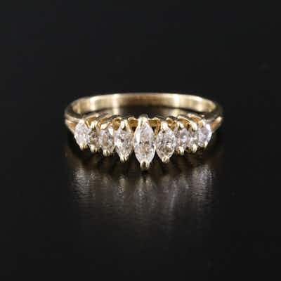

OUTPRICED14K 0.50 CTW Diamond Pyramid Ring
14K yellow gold graduated 'pyramid' band ring set with 7 marquise-cut diamonds, approx. 0.
0 min left
Current bid$226 · 29 bids
Est. value$227
Your max bid$106
All-in at max$156
Projected close$226
Margin at bid−$68
Details & price history →